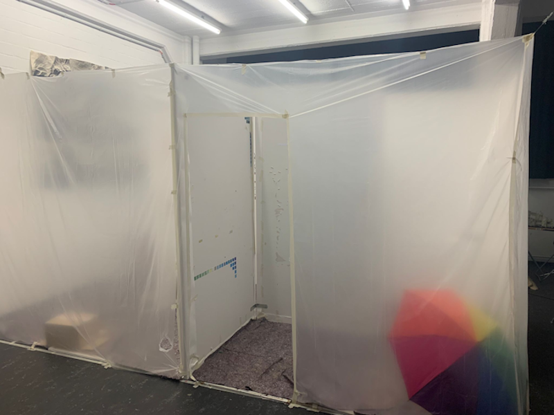
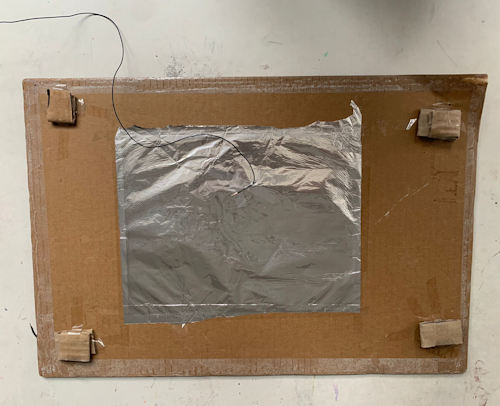
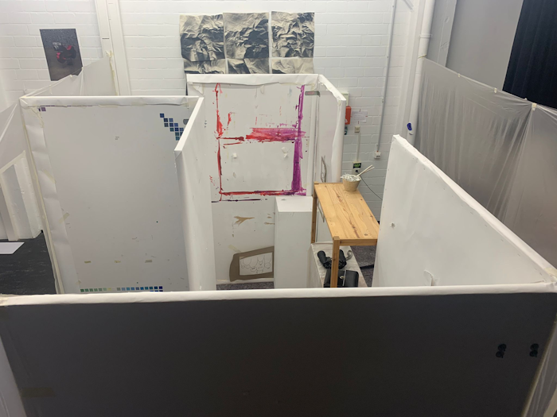
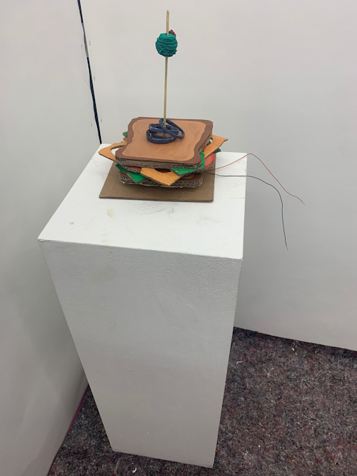

Unsere Klasse arbeitete gemeinsam an einem großen Projekt. Das Ziel war es, ein Interaktives Spiel zu Bauen und zu Programmieren. Nach einigem Brainstorming und ausprobieren, war die fertige Idee für den Sleeping Uncle fertig. Der Spieler läuft durch ein Labyrinth und muss dabei aufpassen auf welche Stelle am Boden er treten darf und auf welche nicht. Der Boden besteht aus nicht sichtbaren Platten die unterschiedlich angeordent sind und Teilweise ereignisse Triggern. Titt der Spieler auf eine falsche Platte, weckt er den neben ihm schlafenden Onkel auf. Dieser ist ein Monster der durch eine Projektion auf einer Leinwand angezeigt wid. Das Spiel ist gewonnen, wenn der Spieler bis zu einem Buzzer, der wie ein Sandwich aussieht, gelangt und diesen drückt ohne das Monster vorher zu wecken.
Meine Aufgabe im Bauteam war es, die gesamte Konstruktion mit meinem Teampartner zu Bauen. Das heißt ein Labyrinth mit passendem Ambiente und Funktionierender Elektrik.
Dazu haben wir eine Fläche abgespannt und auf dem Boden Markiert. Diese Fläche haben wir mit Platten ausgefüllt, die wir vorher mit Alufolie beklebt haben. Dann haben wir an die Alufolie noch Kabelenden befestigt und jeweils zwei Platten aufeinender gelegt.
Tritt der Spieler nun auf solch eine Stelle, wird ein Kontakt zwischen den Alufolien erzeugt und durch das Kabel weitergeleitet. Ein Code vom Coding-Team leitet das Signal dann weiter und löst ein vorgegebenes Ereignis aus.
